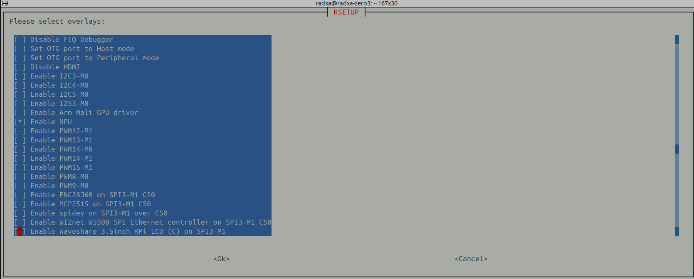
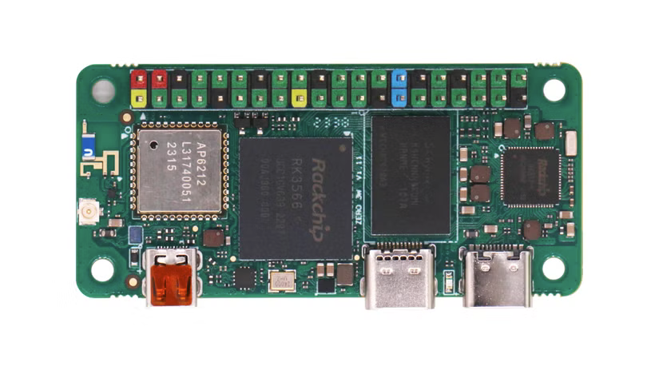
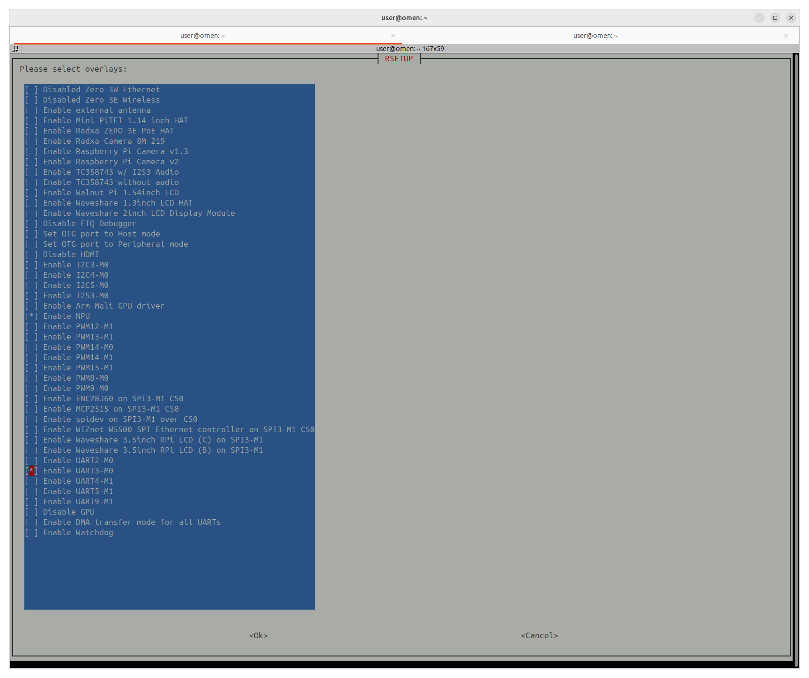
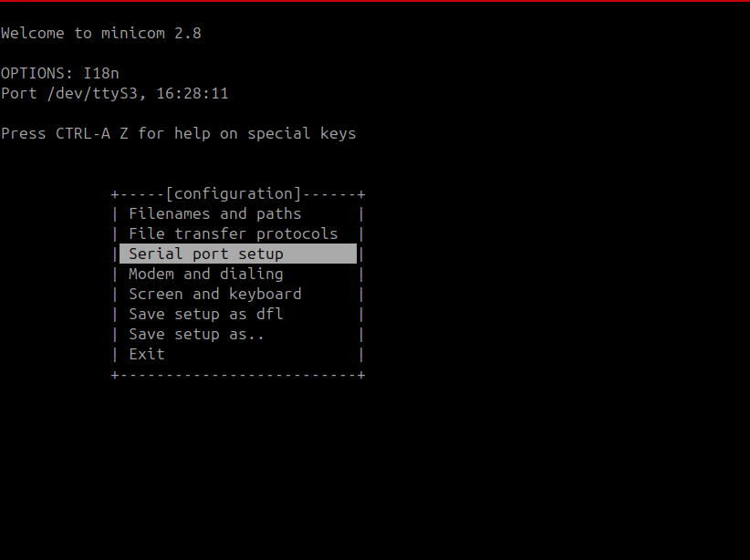
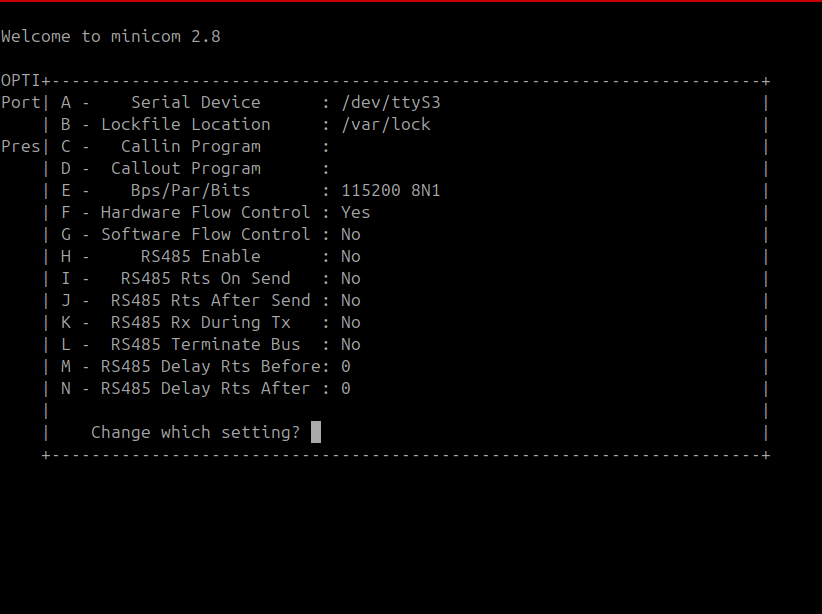
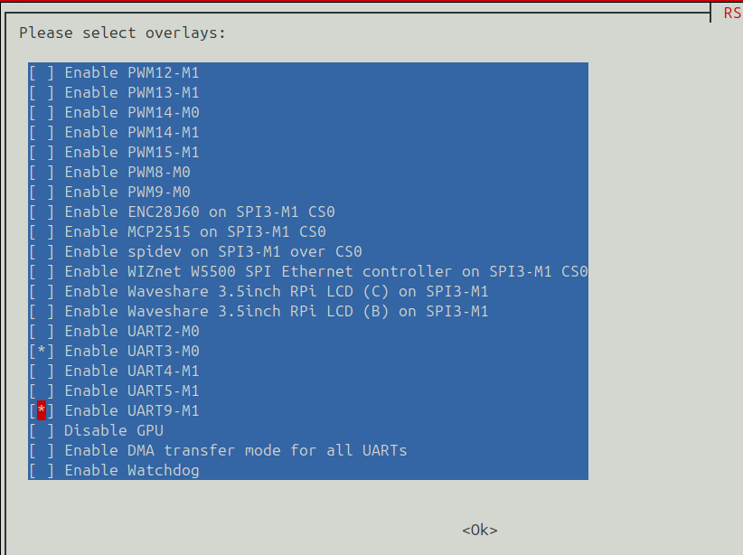

Radxa zero 3w
OS
I try:
- armbian: Base on ubuntu 24.04
- Ubuntu for various Rockchip single board computers
- Radxa document center Downloads for the Radxa Zero 3 6.1 Kernel: radxa-zero3_bookworm_kde_b1
NPU Driver
Work only on Debian Desktop image kernel 6.1 from radxa Official image
user: radxa, pass: radxa
Flash USB
Try usbimager to flush the image
RKNN Installation
NPU Driver Configuration
Run sudo rsetup
Select:

GStreamer
Pipe test
| radxa source | |
|---|---|
| pc side | |
|---|---|
high cpu
There is no different between
gpio

40-pin GPIO interface
The header exposes power, ground, GPIO, UART, PWM, I2C, I2S, and SPI signals. Each signal can only use the alternate functions supported by its row.
Function 1–5 and pin multiplexing
Function 1 through Function 5 are the hardware roles available through the
SoC's pin multiplexer, usually called pinmux. They are selector positions,
not priority levels. Only one function can control a physical pin at a time.
| Column | Meaning |
|---|---|
| Function 1 | Normally the basic GPIO signal, such as GPIO4_C3. |
| Function 2–5 | Alternate peripheral signals such as UART, I2C, SPI, PWM, or I2S. |
| Empty cell | That selector position is not available on the pin. |
For example, physical pin 19 can operate as GPIO4_C3, SPI3_MOSI_M1,
I2S3_SCLK_M1, or PWM15_IR_M1. Selecting SPI disconnects the normal GPIO
function from that pin and connects the SPI controller instead.
Switch a pin function
On an official Radxa OS image, first check whether Radxa provides an overlay for the required peripheral:
- Run
sudo rsetup. - Open Overlays -> Manage overlays.
- Press Space to enable the desired UART, I2C, SPI, PWM, or other overlay.
- Disable any overlay that assigns a conflicting function to the same pins.
- Confirm the selection, exit
rsetup, and reboot withsudo reboot.
Available overlays depend on the board and OS image. Use View overlays info
to inspect which physical pins an overlay configures. If the required mapping
is not offered, create or adapt a device-tree overlay (.dts/.dtbo) and load
it through Overlays -> Install 3rd party overlay. See Radxa's
device-tree overlay instructions.
GPIO level control is different from pinmux
A GPIO command or library changes a pin's input/output direction and logic level after it is configured as GPIO. It does not turn the pin into UART, SPI, I2C, PWM, or I2S. Peripheral selection belongs in the device tree so the kernel can reserve the pins and bind the correct driver.
I2C pull-up resistors
Physical pins 3, 5, 27, and 28 have additional pull-up resistors for I2C. They may not behave normally when configured as general-purpose GPIOs.
| GPIO | Function 5 | Function 4 | Function 3 | Function 2 | Function 1 | Pin | Pin | Function 1 | Function 2 | Function 3 | Function 4 | Function 5 | GPIO |
|---|---|---|---|---|---|---|---|---|---|---|---|---|---|
| +3.3 V | 1 | 2 | +5.0 V | ||||||||||
| 32 | UART3_RX_M0 | GPIO1_A0 | 3 | 4 | +5.0 V | ||||||||
| 33 | UART3_TX_M0 | GPIO1_A1 | 5 | 6 | GND | ||||||||
| 116 | PWM14_M0 | GPIO3_C4 | 7 | 8 | GPIO0_D1 | UART2_TX_M0 | 25 | ||||||
| GND | 9 | 10 | GPIO0_D0 | UART2_RX_M0 | 24 | ||||||||
| 97 | GPIO3_A1 | 11 | 12 | GPIO3_A3 | I2S3_SCLK_M0 | 99 | |||||||
| 98 | I2S3_MCLK_M0 | GPIO3_A2 | 13 | 14 | GND | ||||||||
| 104 | GPIO3_B0 | 15 | 16 | GPIO3_B1 | UART4_RX_M1 | PWM8_M0 | 105 | ||||||
| +3.3 V | 17 | 18 | GPIO3_B2 | UART4_TX_M1 | PWM9_M0 | 106 | |||||||
| 147 | PWM15_IR_M1 | I2S3_SCLK_M1 | SPI3_MOSI_M1 | GPIO4_C3 | 19 | 20 | GND | ||||||
| 149 | UART9_TX_M1 | PWM12_M1 | I2S3_SDO_M1 | SPI3_MISO_M1 | GPIO4_C5 | 21 | 22 | GPIO3_C1 | I2S1_SDO2_M2 | 113 | |||
| 146 | PWM14_M1 | I2S3_MCLK_M1 | SPI3_CLK_M1 | GPIO4_C2 | 23 | 24 | GPIO4_C6 | SPI3_CS0_M1 | PWM13_M1 | UART9_RX_M1 | I2S3_SDI_M1 | 150 | |
| GND | 25 | 26 | NC | ||||||||||
| 138 | I2C4_SDA_M0 | I2S2_SDI_M1 | GPIO4_B2 | 27 | 28 | GPIO4_B3 | I2C4_SCL_M0 | I2S2_SDO_M1 | 139 | ||||
| 107 | I2C5_SCL_M0 | GPIO3_B3 | 29 | 30 | GND | ||||||||
| 108 | I2C5_SDA_M0 | GPIO3_B4 | 31 | 32 | GPIO3_C2 | UART5_TX_M1 | I2S1_SDO3_M2 | 114 | |||||
| 115 | UART5_RX_M1 | I2S1_SCLK_RX_M2 | GPIO3_C3 | 33 | 34 | GND | |||||||
| 100 | I2S3_LRCK_M0 | GPIO3_A4 | 35 | 36 | GPIO3_A7 | 103 | |||||||
| 36 | I2S1_SCLK_RX_M0 | GPIO1_A4 | 37 | 38 | GPIO3_A6 | I2S3_SDI_M0 | 102 | ||||||
| GND | 39 | 40 | GPIO3_A5 | I2S3_SDO_M0 | 101 |
Pinout data adapted from the Radxa ZERO 3 hardware interface documentation, licensed under CC BY 4.0.
Enable uarts

Don't forget to reboot
Check it
jumper pin 3 to 5
!!! tip Don't forget to jumper the pins
and check it using minicom
| run it | |
|---|---|
check minicom configuration
Disable uart Hardware Flow Control

Then press f

- Exit using
esc - Press any key and get echo on screen
enable other uart's
| Physical pin | GPIO | Alternate function |
|---|---|---|
| 3 | GPIO1_A0 | UART3_RX_M0 |
| 5 | GPIO1_A1 | UART3_TX_M0 |
| 8 | GPIO0_D1 | UART2_TX_M0 |
| 10 | GPIO0_D0 | UART2_RX_M0 |
| 16 | GPIO3_B1 | UART4_RX_M1 |
| 18 | GPIO3_B2 | UART4_TX_M1 |
| 21 | GPIO4_C5 | UART9_TX_M1 |
| 24 | GPIO4_C6 | UART9_RX_M1 |
| 32 | GPIO3_C2 | UART5_TX_M1 |
| 33 | GPIO3_C3 | UART5_RX_M1 |
Uart linux device mapping
| RK3566 UART | Linux device | Zero 3W header pins |
|---|---|---|
| UART2 | /dev/ttyS2 |
TX 8, RX 10 |
| UART3 | /dev/ttyS3 |
RX 3, TX 5 |
| UART4 | /dev/ttyS4 |
RX 16, TX 18 |
| UART5 | /dev/ttyS5 |
TX 32, RX 33 |
| UART9 | /dev/ttyS9 |
TX 21, RX 24 |
Demo: enable uart9
- Run rsetup
- Manage overlays
- Enable uart9
- Save
- Reboot

| check after boot | |
|---|---|
| minicom | |
|---|---|
Warning
Disable uart Hardware Flow Control
ctrl-a o- select Serial port setup
- press
f